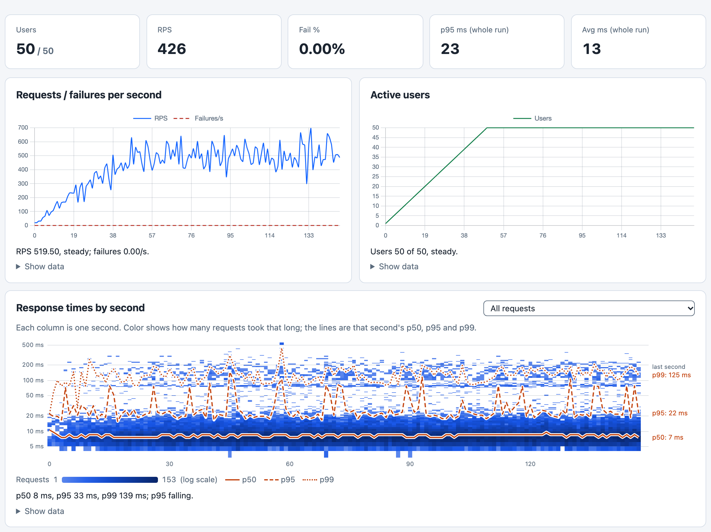
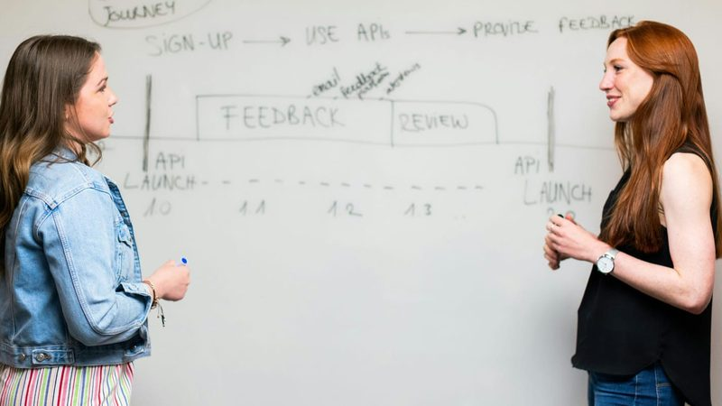

The Goose Bookopen source load testing in Rust
Have you ever been attacked by a goose?
Looks harmless, hits hard: given the same two cores and 1,000 users over HTTPS, Goose sent 21,400 requests per second, against 15,800 for k6 and 8,400 for Locust.
Goose is a load testing tool written in Rust. A load test is a small Rust program that depends on the goose crate: you build it with Cargo and run it against a host, choosing the users and the run time on the command line.
Goose, a Innovation


Opens the full size imageRun It Yourself
In the run above, users start one a second: the requests per second climb with them and level off, the tiles other than Users cover the whole run, and each column of the heatmap is one second of response times.
That run came from the Umami example in a checkout of Goose, against a copy of the Drupal Umami demo site, with its admin password in the ADMIN_PASSWORD environment variable. --no-reset-metrics keeps the ramp up in its numbers; without it, Goose clears the metrics when the ramp up ends:
cargo run --release --features dashboard \
--example umami -- \
--dashboard -H http://umami.example.com \
-u 50 -r 1 -t 3m --no-reset-metricsWhy Use Goose
Goose is inspired by Locust. Where Locust has a user class with tasks, Goose has a scenario with transactions. HTTP requests go through the Reqwest client. A load test of another protocol, such as raw TCP, times each operation itself and records it in Goose's metrics.
One Process Uses Every CPU Core
A Goose load test runs its users as async tasks on Tokio's multi-threaded runtime, which spreads them across a server's cores. Locust needs a process per core to do the same.
Fills A Server's Uplink
In Tag1's A Goose In The Clouds (2021, an earlier Goose release), one 8 core server simulated 2,000 users at a sustained 2.5 Gbps, limited by its network uplink, and one 32 core server filled its 9 Gbps uplink.
Load Tests Are Rust Code
A load test can use any crate and builds to one binary, to run in CI or a container. See Creating A Load Test.
Results A Pipeline Can Act On
Thresholds fail a run on its metrics, and with a baseline the PDF, HTML and Markdown reports show each number's change since an earlier run.
Watching A Run And Its Reports
While It Runs
The live dashboard needs the dashboard feature, which is off by default; Watching a run shows how to turn it on. Goose then serves it at http://127.0.0.1:5118/ while a load test runs with --dashboard, and saves the run's report when it ends. With --dashboard-control and a dashboard token, the dashboard can also start and stop the test and change its users and settings; Turning it on explains the token, and --dashboard-no-auth, which turns authentication off.
When It Ends
Each --report-file <FILE> writes one report, its type set by the file's extension: PDF (from a build with the pdf-reports feature), HTML, Markdown or JSON. Writing reports shows each. Goose also prints its metrics to the console.
Goose 0.19 runs on one server: Gaggle, the distributed load test, was removed in Goose 0.17.0 and will be restored in Goose 0.20, before the 1.0 release. For a distributed load test today, use Goose 0.16.4.
Brought To You By
Goose is made by Tag1 Consulting and led by Jeremy Andrews, Tag1's CEO, with many community contributions. Tag1 is a member of the Rust Foundation.
From The Tag1 Blog

Beyond Code Generation: How AI Enhanced Our Load Testing Workflow and Documentation Tag1 Joins the Rust Foundation as the First Silver MemberComing From Goose 0.18?
Change the dependency to goose = "^0.19", then work through the changes that can break a Goose 0.18 load test or alter what it does.